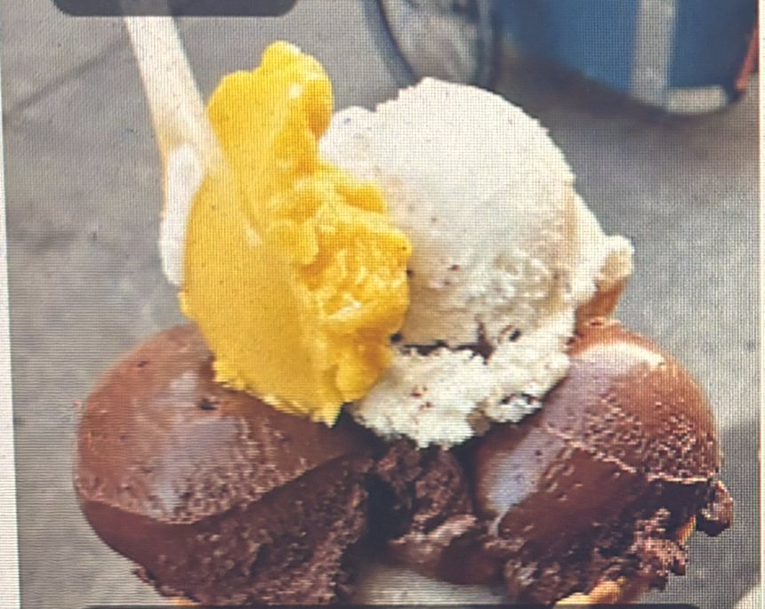
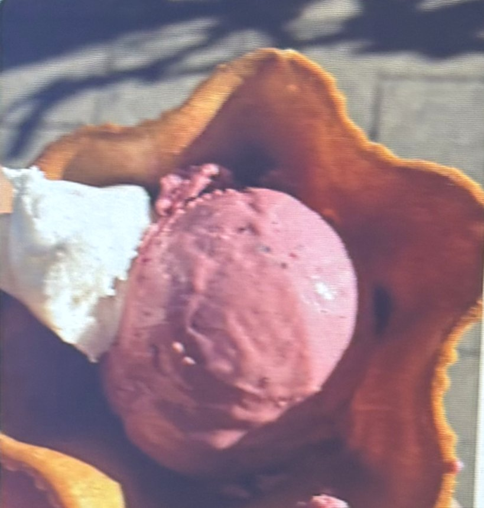
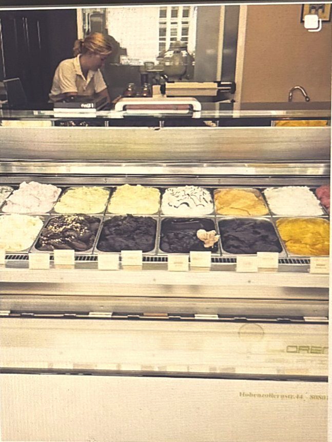
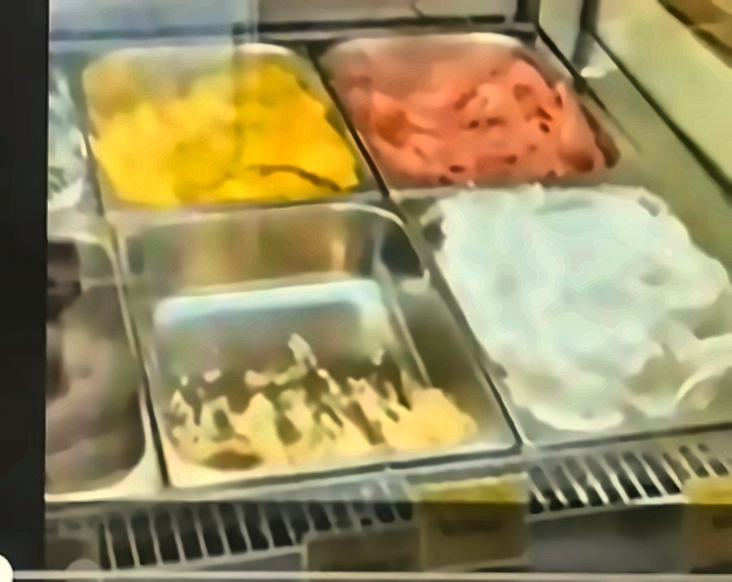
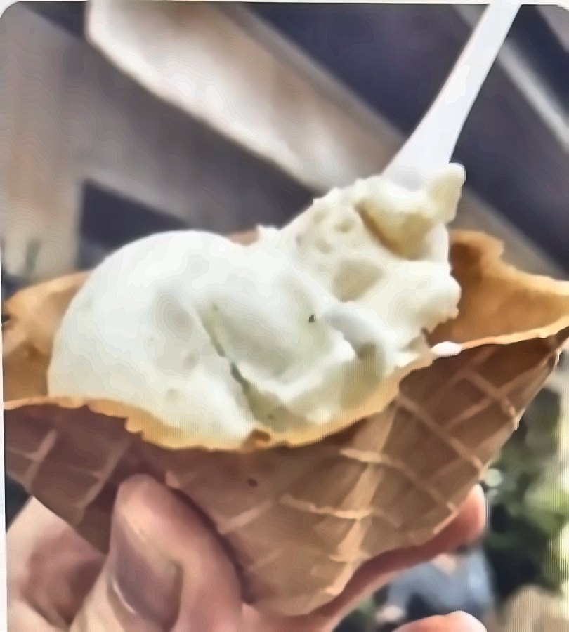
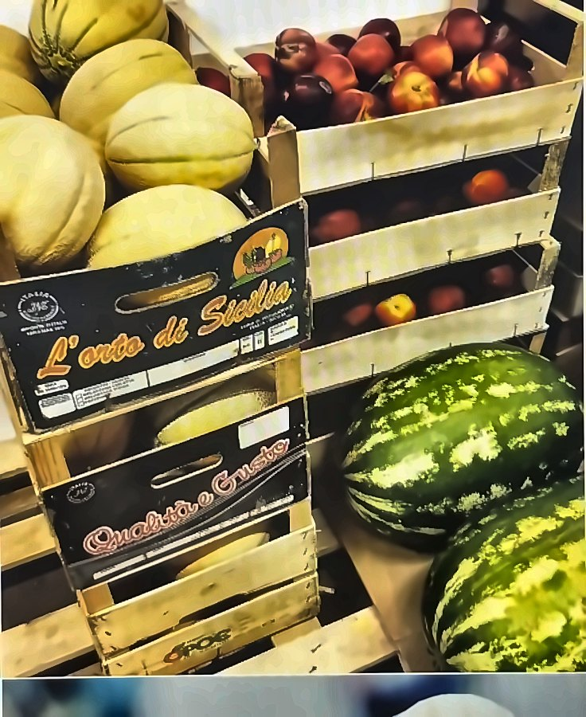
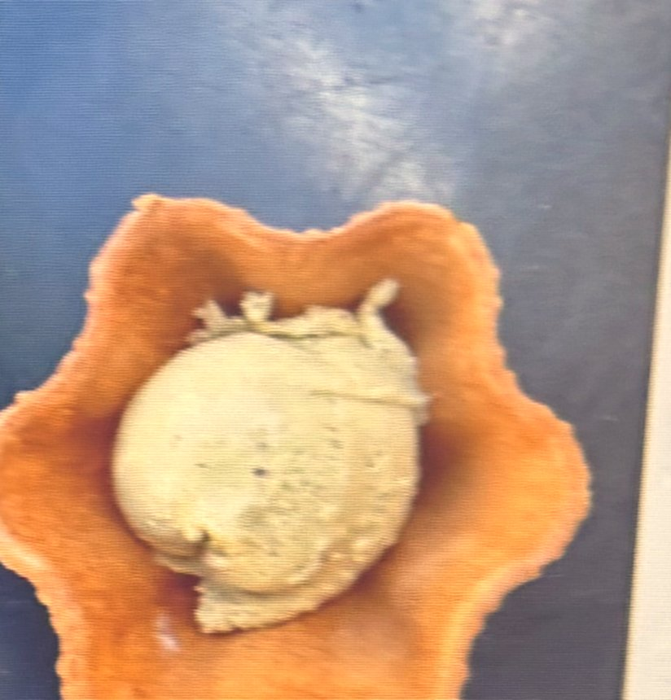
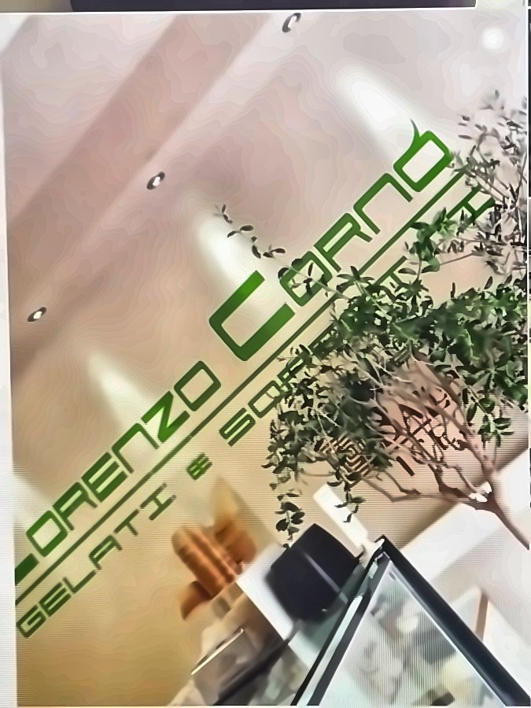

Tonkabohne & Kürbis
Warm, würzig, überraschend – die Sorte, über die ganz Schwabing spricht.
Gelateria · Schwabing-West
In der Hohenzollernstraße 44 macht Lorenzo Corno sein Eis noch von Hand – nach der Tradition seiner Heimat Kalabrien. Jeden Tag frisch, direkt hinter der Theke.
Impressionen
Momente aus der Gelateria – von unseren Gästen auf Google geteilt.








Über Lorenzo
Lorenzo Corno stammt aus der Nähe von Cosenza in Kalabrien – und bringt die Eistradition Süditaliens nach München. In seiner kleinen Gelateria entsteht das gesamte Eis direkt hinter der Verkaufstheke: von Hand, in kleinen Mengen, so wie man es heute fast nur noch in Süditalien findet.
Neben Klassikern wie Vanille und Schokolade wartet die Theke mit Kreationen, die man so schnell nicht vergisst – und wer freundlich fragt, für den kreiert Lorenzo auch mal eine Sorte auf Wunsch. Zu jedem Eis gibt’s ein Probierlöffelchen einer anderen Sorte obendrauf.
Unsere Sorten
Die Auswahl wechselt mit Saison und Laune des Maestros – diese Lieblinge unserer Gäste tauchen aber immer wieder auf.
Warm, würzig, überraschend – die Sorte, über die ganz Schwabing spricht.
Feiner Bergamotte-Tee trifft auf frische Zitrone. Elegant und erfrischend.
Nussig-geröstet mit asiatischer Note – cremig wie ein Espresso am Abend.
Blumig und zart – schmeckt wie ein Spaziergang durch einen Sommergarten.
Dunkle Schokolade mit feuriger Ingwerschärfe – intensiv und lang im Abgang.
Drei Klassiker, ein Becher: cremige Vanille, weiße Schokolade, Pistazien-Crunch.
Espresso-Eis mit knusprigem Krokant – der Liebling unserer Stammgäste.
Frischer Joghurt trifft fruchtige Heidelbeeren – serviert im Waffelblüten-Becher.
Dazu natürlich alle Klassiker – von Pistazie über Stracciatella bis Zitronensorbet. Und mit etwas Glück steht heute eine Sorte in der Theke, die es morgen schon nicht mehr gibt.
Wie auf unserer Tafel im Laden
Ciao, Hello, Servus – such dir einen Platz an der Theke.
Cono, Waffelbecher, Papierbecher – oder die Box to go für zuhause.
Helle Schilder = Creme-Eis, grüne Schilder = veganes Eis. Ein Probierlöffelchen gibt’s obendrauf.
Bar oder mit Karte (Karte meist ab zwei Kugeln).
Sitzplätze gibt es keine – die Locals genießen ihr Eis auf den Stufen der Kirche St. Ursula am Kaiserplatz, zwei Minuten zu Fuß.
Das sagen unsere Gäste
„Endlich ein richtig gutes Eis in München! Als wählerische italienische Eis-Liebhaberin sage ich: Lorenzos Eis hat höchste Qualität – unbedingt die Kaffeesorten probieren."
„Das beste Gelato, das ich je gegessen habe – und ich habe es auf der ganzen Welt probiert. Wow, einfach wow. Die Haselnuss war unglaublich!"
„Mein Go-to-Eis in München: Kaffee Krokant und weiße Schokolade mit Pistazien sind ein Traum – aber ehrlich, alle Sorten sind einfach fantastisch!"
Besuch uns
Mitten in Schwabing-West, zwischen Hohenzollernplatz und Kurfürstenplatz. Am besten kommst du einfach vorbei – das Eis wartet schon.
Täglich von 11:30 bis 22:30 Uhr · Hohenzollernstraße 44, München
Jetzt Route planen